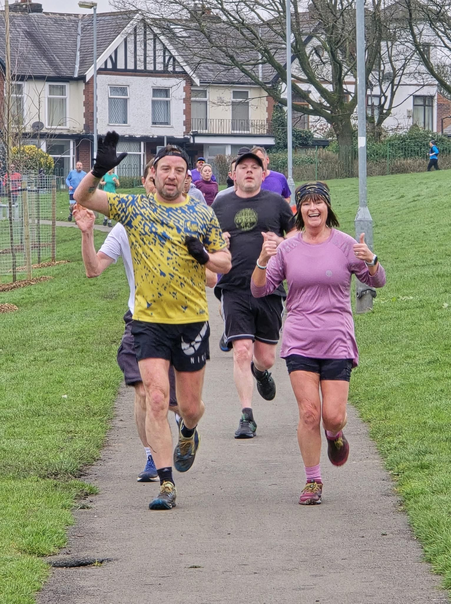
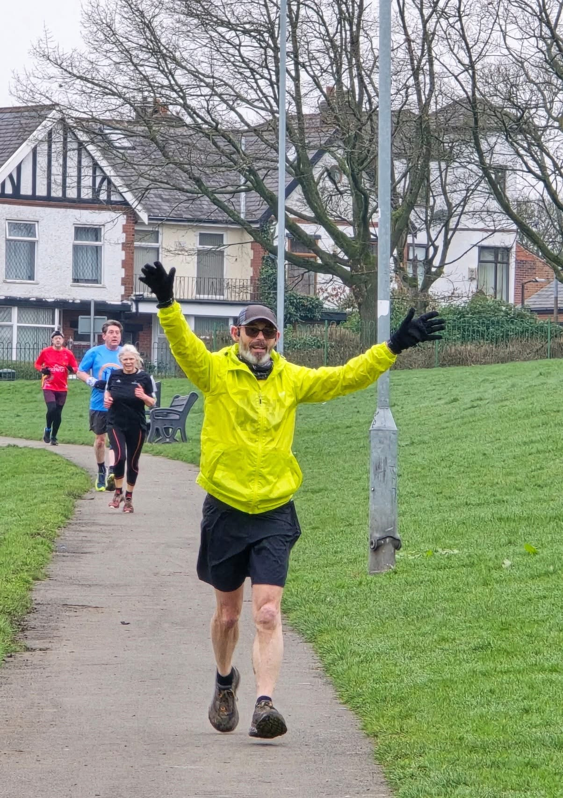
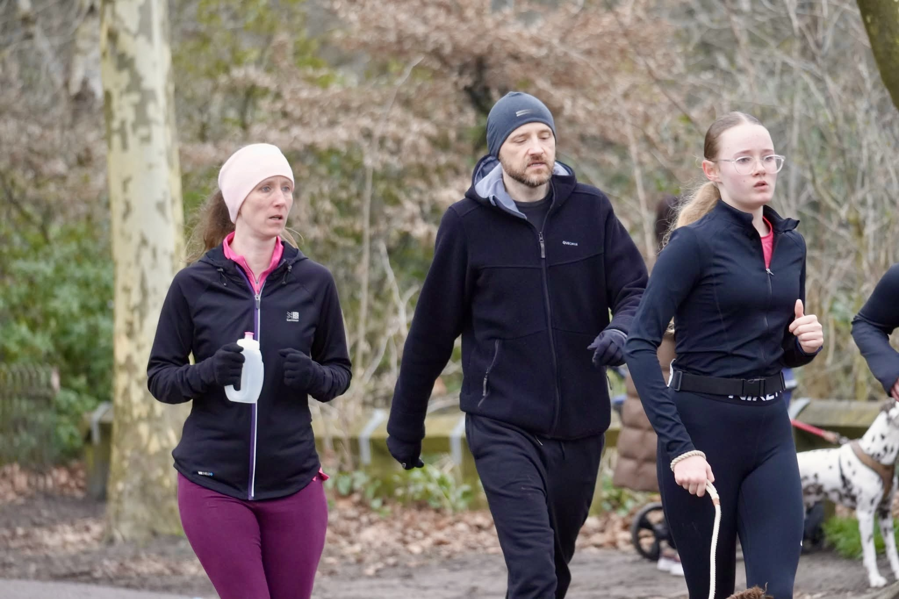
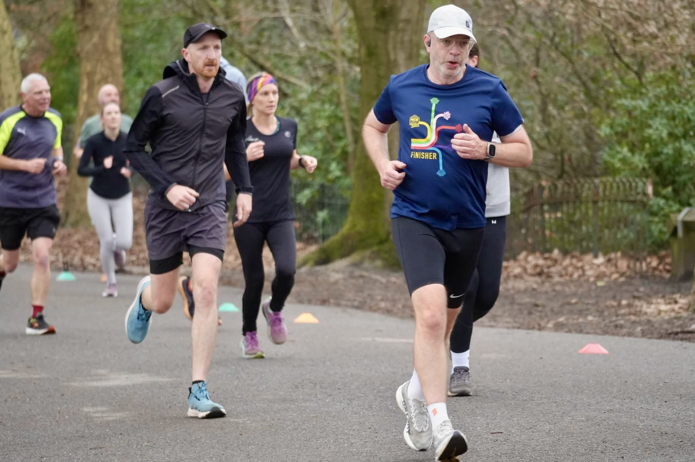
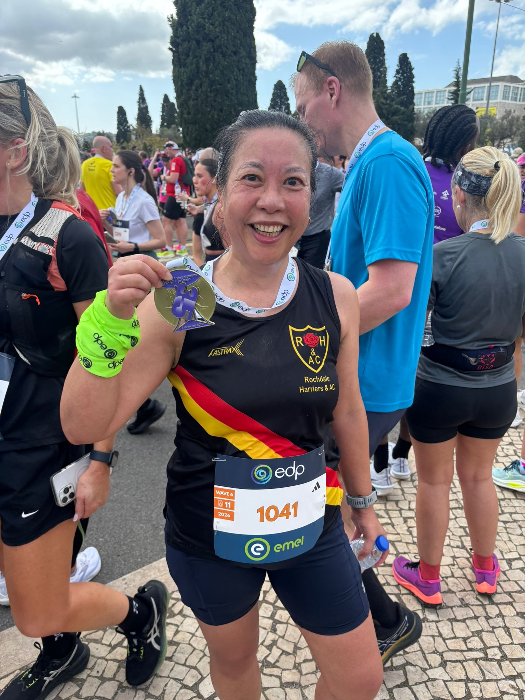
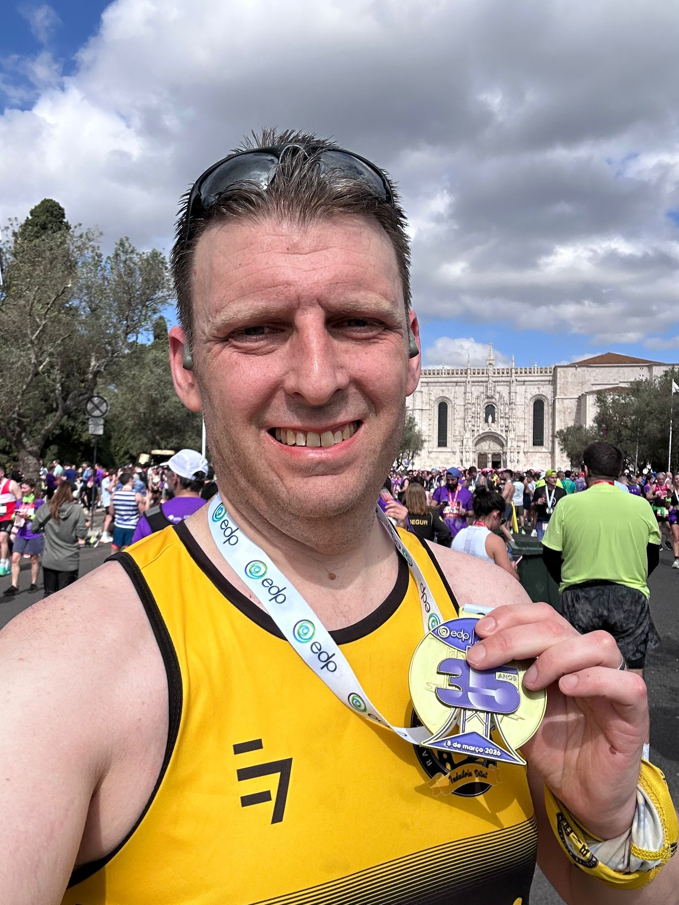
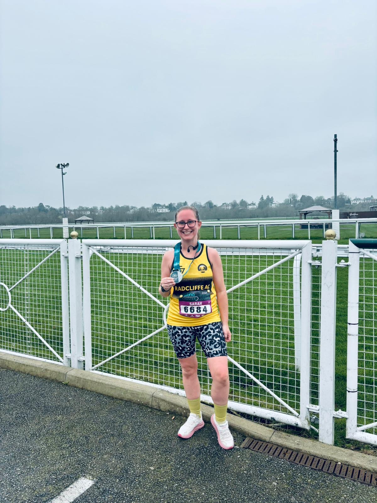
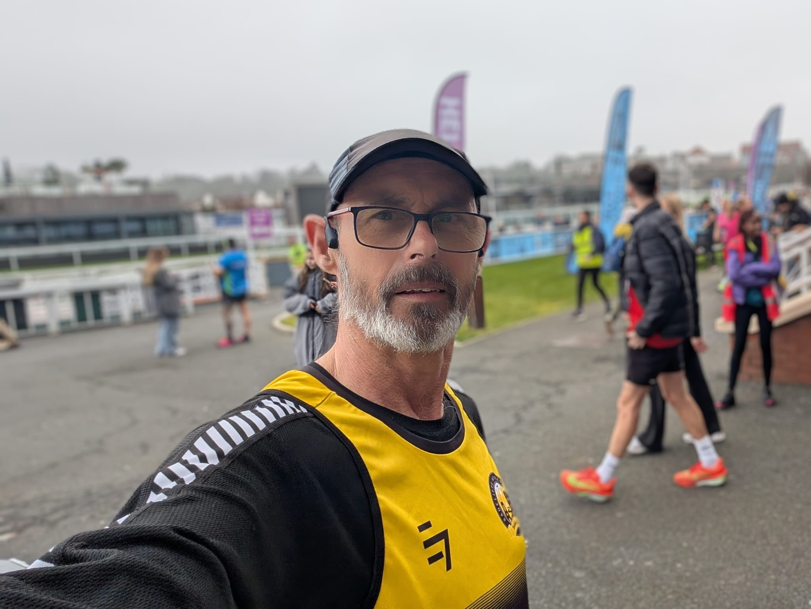
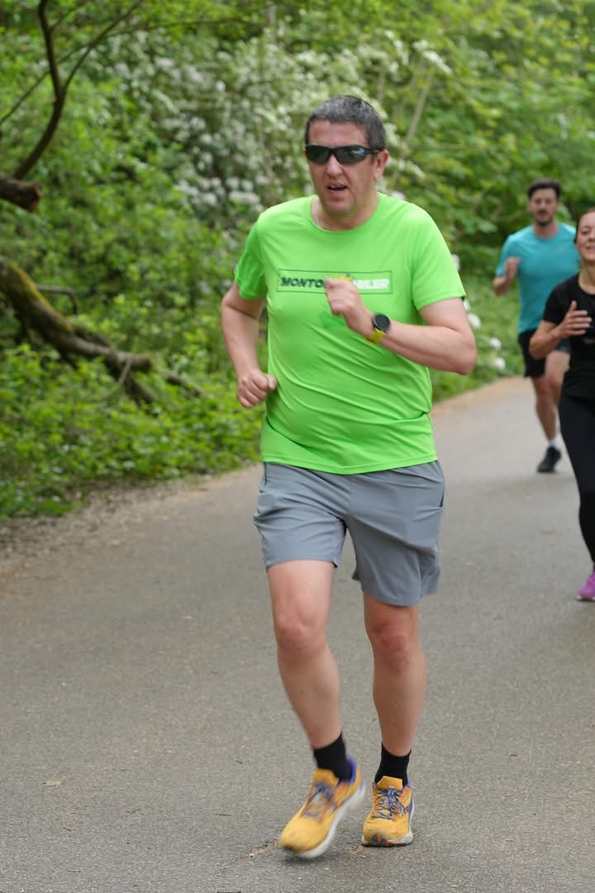
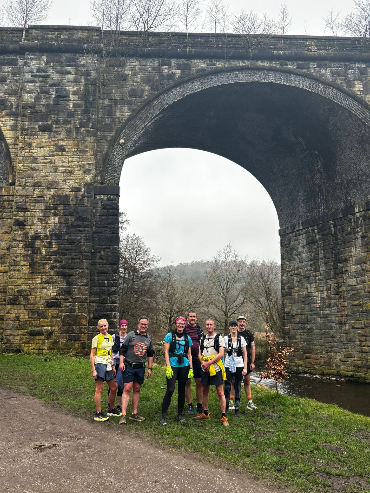

Weekend Roundup
7 March 2026🏃 Parkrun
What a weekend for RTR! 16 runners were out at parkrun across 5 venues on Saturday morning. Here's how everyone got on.
Bolton
Josh Young had a great morning at Bolton, first RTR runner home on a course that rewards consistent running down by the river. Rosalyn Dines also put in a solid effort — great to see her flying the flag on this challenging course.
Clarence
Over at Clarence Park in Bury, Christopher Mihalyi was leading the way for the group, running strongly on a course that weaves through a lovely mix of paths and grassland. Stephen Crowe also took on the course and put in a fine effort.
Heaton Park
The biggest turnout of the day, with 6 RTR members at Heaton! Dale Richards was first back for the group on what is clearly his home turf. Paul Cox was close behind and in good form. Cheryl Stewardson ran brilliantly — looking really consistent at the moment. Paige Ashworth tackled the course well, and Jacqui Warden put in another solid effort. Also great to see Chris back at Heaton 💜
Peel
3 RTR members made the trip to Peel. Kath Biddle was quickest of the RTR contingent, running with her usual composure on a course she clearly knows well. Fiona Case and Derek Case both had fine outings too — brilliant to see the Peel regulars out representing the group.
Stretford
Andrew Whitehead and Alison Whitehead both headed to Stretford and crossed the line together — a perfectly coordinated effort on a popular and well-loved course.
🏅 Races
EDP Lisbon Half Marathon
Mark Taylor and Julie Smith travelled to Lisbon to take on one of Europe's great running occasions — the EDP Lisbon Half Marathon, part of the prestigious Superhalfs series. The race starts on the iconic Ponte 25 de Abril bridge, giving runners an exclusive chance to cross it on foot with panoramic views over the city, before following the Tagus riverside to a stunning finish in front of the Mosteiro dos Jerónimos. With 35,000 runners from across the world, it doesn't get much bigger than this. For Mark it was his 2nd race in the Superhalfs series, and for Julie her 3rd — brilliant efforts from both of them! 👏
Chester 10k
Also on Sunday, Steve Crowe and Sarah Wilson took on the Chester 10k — a lovely flat, fast course through one of England's most beautiful historic cities. A great early-season race and brilliant efforts from both of them. Well done! 👏
🥾 Social Trail Run
Cotton Steel Rail Trail — Stage 2
This weekend also saw a brilliant group of RTR members lace up for something a little different. Dale, Delphine, Clive, Nick, Paula, Kath, Jacqui, Nikki and Paul completed Stage 2 of the Cotton Steel Rail Trail — running from Chinley to Romiley on a fantastic long-distance route that links Sheffield to Manchester through the Peak District. The trail follows in the footsteps of the steel and cotton workers who used to travel the Hope Valley line to escape the cities for fresh air and open countryside, and Stage 2 takes in some wonderful Peak District scenery along the way. What a cracking way to spend the weekend — can't wait for Stage 3! 💜
📸 Photos









